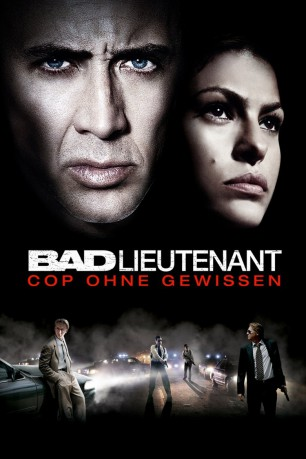

#3667 Bad Lieutenant - Cop ohne Gewissen
Alternativ: Bad Lieutenant: Port of Call New Orleans (Englischer Titel)
 
 IMDB-Wertung: 6.7 / 10
IMDB-Wertung: 6.7 / 10  Metascore: 0
Metascore: 0 
Cop Terence McDonagh muss den grausamen Mord an einer afrikanischen Einwandererfamilie aufklären. Ein Zeuge, der Botenjungen Daryl, taucht auf, doch während sich Terence um dessen Sicherheit kümmert, kommt es zu immer mehr Problemen. Als schliesslich seine Freundin in Gefahr gerät, droht die Situation zu eskalieren.
Jahr: 2009
Dauer: 121 Minuten
FSK: 16
Land: USA Studio: First Look PicturesTonspuren: DTS - ,
Untertitel:
Auflösung: 1080p (1920x1080) Größe: 8478 MB
Genre: Drama, Krimi
Regisseur:  Werner Herzog
Werner Herzog
Drehbuch: Thomas Szabo
Soundtrack:
Darsteller:
Datei: X:\2009(A-F)\Bad Lieutenant - Cop ohne Gewissen (2009, FSK16, 1920x1080).mkv seit 16.05.2016
Festplatte: HD 2008(G-Z)-2009(A-F)
 Es gibt insgesamt 91 Filme in der Gruppe '2009(A-F)'
Es gibt insgesamt 91 Filme in der Gruppe '2009(A-F)'